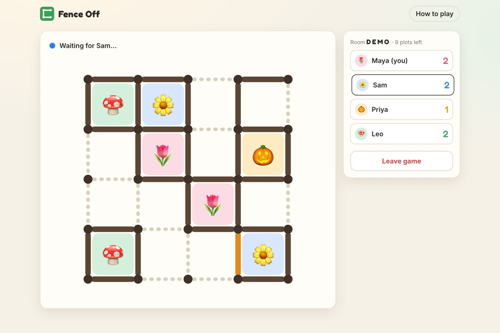
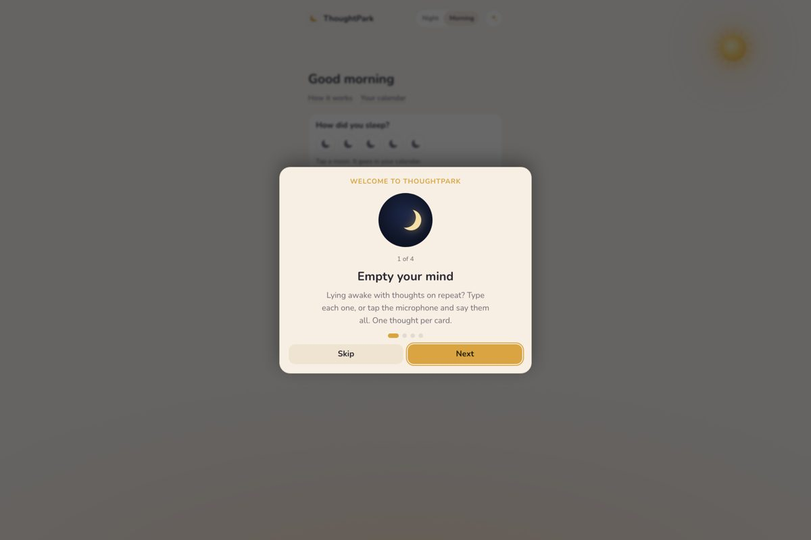
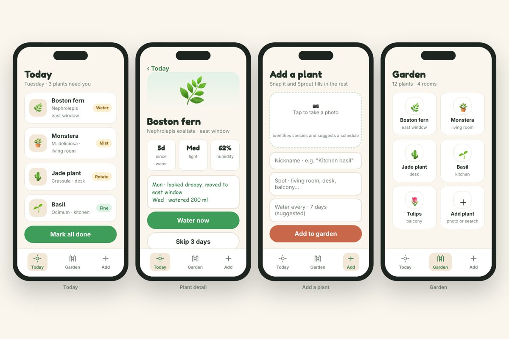
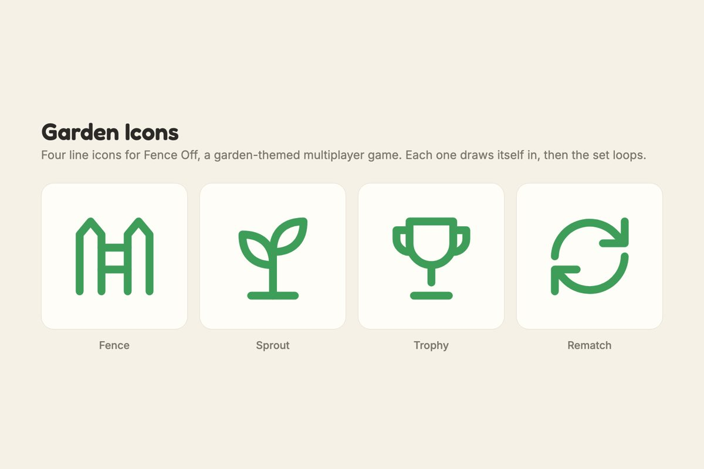
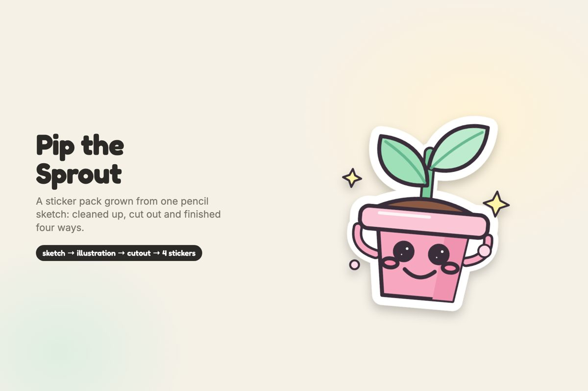
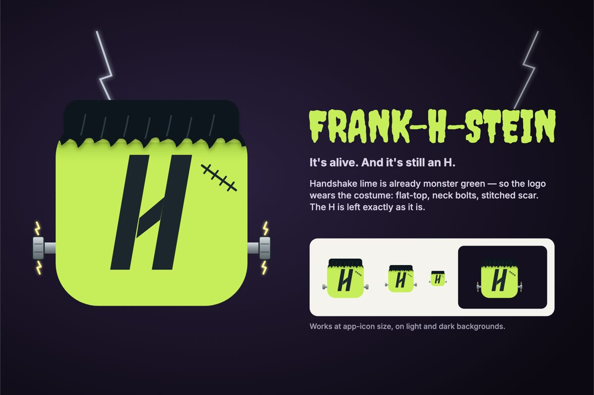

Data scientist and ML engineer (Cornell M.Eng). Day job: causal inference and forecasting. Evenings: this garden of side projects, each one shipped with an AI coding agent at my side and tested until it actually works.
Six things you can open right now. Each was built with an AI coding agent, then played, clicked and screenshot-tested until it held up.




Four animated line icons (fence, sprout, trophy, rematch) that draw themselves in and loop in sync. One keyframe set, every path normalised to the same length.

A mascot that went from pencil sketch to four finished stickers: die-cut, kawaii, retro badge and holographic, all generated from one set of shapes.

A Halloween take on the Handshake "H": stitched, bolted and glowing green, delivered as light, dark and single-colour marks for a logo contest.
I'm a machine learning engineer with a Cornell M.Eng in biomedical engineering. Most of my work is quantitative: causal inference, forecasting and the data plumbing that makes them trustworthy.
This site is the other half. Small projects are where I learn fastest, and building them with an AI agent has changed what "small" means: a multiplayer game or a full design kit now fits in a weekend, as long as someone keeps testing what the AI claims.
Looking for data and ML roles, and always up for a conversation about shipping small things well. The fastest way to reach me is a Handshake message; GitHub has the code.
Every project above with its live link, as a PDF you can forward or print.
Download PDFData scientist & ML engineer · Cornell M.Eng · side projects built with AI